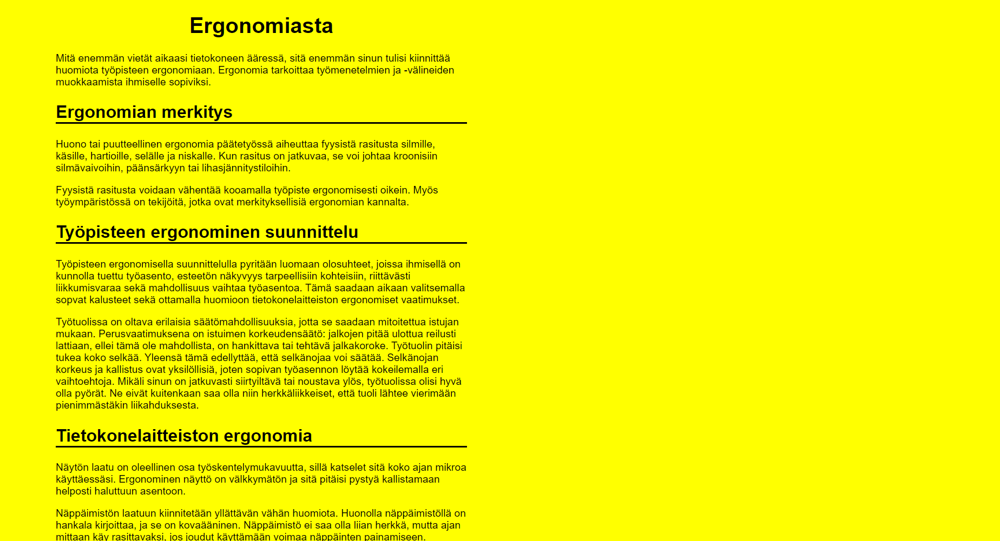

Works
Ergonomics work
In the work, the website had to be implemented based on a template image. The template image had a text that had to be copied and things to be added to the stylesheet. Link to the work.
About tigers work


In the work, one page had to be created based on the template image, then another page was added to it, and the second page could be modified as desired. Link to the work.